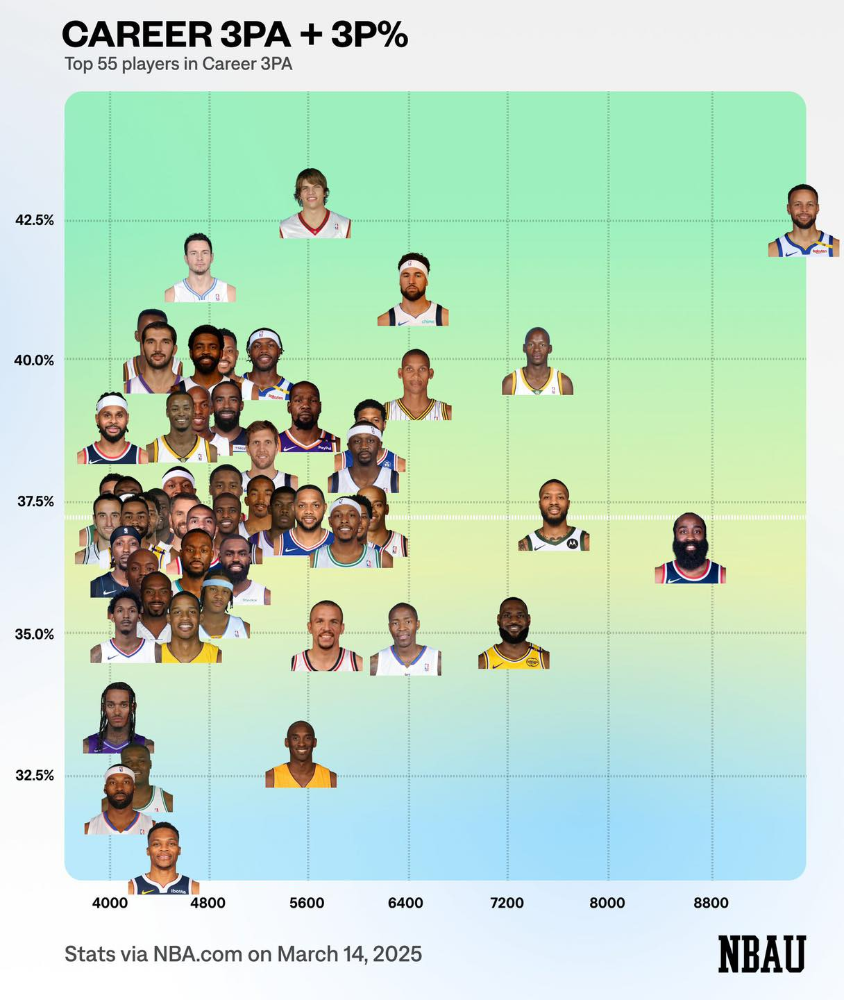

和美高中・115-1 專題寫作指導
資料視覺化
看見數字背後的故事
2026.10.21
先問一個問題
Kobe Bryant 和 Kevin Durant，
誰是比較強的三分球射手？
生涯三分球出手數
- Kobe Bryant5,5465 座總冠軍 · 18 次全明星
- Kevin Durant5,5742 座總冠軍 · 14 次全明星
→ 出手數幾乎一樣（差 28 球），這樣比得出來嗎？
那加上「命中率」呢？
- 出手數差不多（5,546 vs 5,574）
- KD 命中率：39.1%
- Kobe 命中率：32.9%
- 差距：6.2 個百分點
出手數一樣多，KD 投進的球大約多了 340 顆。
那其他射手呢？
把生涯三分球出手數前 55 名的球員，全部放在同一張圖上。
- X 軸生涯三分球出手數
- Y 軸生涯三分球命中率
- 每個圓點一位球員
資料來源：basketball-reference.com（截至 2026-04）
NBA 史上 55 大三分射手
滑鼠移到圓點上會顯示球員名字。

同一份資料，換成球員頭像
圖片來源：NBAU，Stats via NBA.com on March 14, 2025
這張圖告訴我們什麼？
- Curry 在最右上角——出手最多、命中率還名列前茅
- Korver 出手中等但命中率最高（42.9%）：精準型
- Westbrook 出手很多但命中率只有 30.8%：量大但效率低
- Kobe 在偏左下：以三分球論，他不在頂尖之列
同一份資料，
換一種呈現方式，
故事就完全不同。
結論人是視覺的動物
透過資料視覺化，你能更快速、更直觀地理解事情的全貌。
同一件事，三種呈現
- 單一數字看不到比較
- 表格看得到比較，但要動腦排序
- 圖表一眼就知道趨勢、極端值、群聚
實際例子｜遠見雜誌
遠見雜誌的這一期主題：遠見雜誌 Topic 2352
- 折線圖：讓讀者看到趨勢的方向（往上、往下、轉折）
- 長條圖：讓讀者一眼比較不同類別的大小
- 專業媒體之所以讓讀者「看得懂」一個議題，圖表往往比文字更先發揮作用。
典型圖表的
用法
象限圖（散布圖）
區分類別／二維分類
- BCG 矩陣：市佔率 × 成長率
- 明星／金牛／問題／瘦狗
- 艾森豪矩陣：重要 × 緊急
- 剛剛 NBA 球員散布圖
- 出手數 × 命中率
折線圖
趨勢變化／時間序列
- 台灣出生人口逐年下降（少子化）
- 台積電股價 10 年走勢
- 每月平均氣溫
- 新冠疫情每日確診數
長條圖
比較類別之間的數量
- 各縣市人口數
- 各國 2025 年 GDP
- 班上各科平均分數
- 各品牌手機市佔率
圓餅圖
顯示比例／部分對全體
- 選舉得票率
- 家庭支出結構（食衣住行）
- 台灣能源結構（火力／核能／再生）
⚠️ 類別超過 5–6 種就不適合，會看不清楚
選圖之前，先問三個問題
- 我想讓觀眾看到什麼？比較？趨勢？比例？關係？
- 我的資料有幾個維度？單一指標？兩個變數？時間序列？
- 我想引導觀眾得到什麼結論？
圖表是「論述工具」，
不只是裝飾。
選錯圖，會讓讀者誤解你想說的話。
牛刀小試
在這個 Google Drive 資料夾裡，有一些可以練習的資料：開啟 Google Drive 資料夾
- 每組挑一個檔案
- 不限方法、不限工具：Excel、Google 試算表、Canva、ChatGPT… 都可以
- 畫出至少一張圖表
- 準備上台向同學解釋：你選了什麼圖、為什麼選這個、看出了什麼
提示解釋「為什麼選這張圖」，
比把圖畫漂亮更重要。
更多資料來源：如果你想自己找題目做專題
- PRIDE 政策研究指標資料庫─ 國科會建置，跨國政策、科技、經濟、社會指標
- 中華民國統計資訊網─ 行政院主計總處，人口、物價、GDP、勞動等官方統計
延伸閱讀（給有興趣的同學）：Our World in Data（英文，全球議題視覺化）、政府資料開放平台
看見數字背後
真正想說的故事
本週任務
在你既有的主題裡，找到一份量化的資料，把它變成圖表放進報告裡。